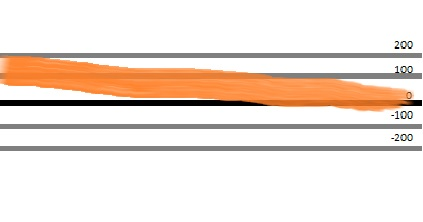
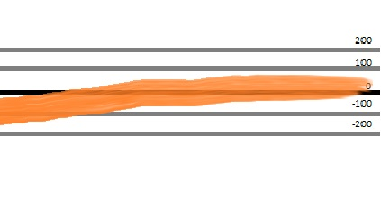
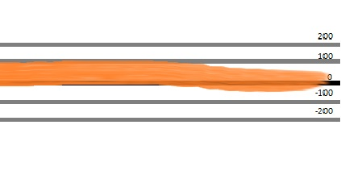
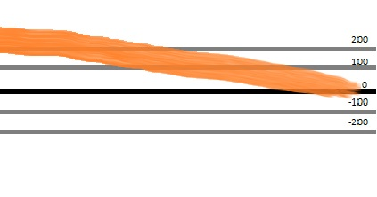
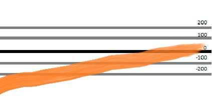

A simple jQuery event swipe library. When a swipe happens an event will be triggered.
There are four events.
$(element).on("swipe.up", (e) => {});
$(element).on("swipe.down", (e) => {});
$(element).on("swipe.left", (e) => {});
$(element).on("swipe.down", (e) => {});
$(element).on("swipe.all", (e) => {}); // Triggers on all swipe directions
The event will be triggered on the element that was swiped. The directional event is triggered first,
then the "swipe.all" event will run.preventDefault has no effect on these events.
The event object will have the following relevant properties:
event.direction
Can be "up", "down", "left" and "down"
event.distance
The distance covered in the recorded swipe in pixels. This is the distance along the measured axis,
not accounting for extra distance traveled along the perpendicular axis.
event.duration
How long it took for the swipe to complete.
To calculate the speed you can divide distance / duration.
event.deviation The deviation perpendicular to the swipe direction. Can be negative or positive.
When looking for an up or down swipe, please note that that the document will continue to scroll/flinged to position.
There are several tricks you can apply, but they vary by use case.
One trick you might consider using is setting the overflow-y property on the document when the touchstart happens within a wrapping element.
let $swipefield = $('.swipefield);
$body = $('body');
$swipefield.on('touchstart', (e) => {
$body.css({
'overflow-y': 'hidden'
});
});
$swipefield.on('touchend', (e) => {
$body.css({
'overflow-y':''
});
});There are three settings that can be managed for the swiper.
threshold
How many pixels need to be travelled at a minimum to count as a swipe and not a tap.
default 50
restraint
Maximum numbers of pixels that can be travelled at an a perpendicular direction that it can still be counted as a swipe and not a scroll.
So if you are swiping left you allow the swipe this many pixels to deviate to the top and bottom.
default 200
For example, these are swipes with the orange path marking the movement of the swipe. The black line is the starting point of the swipe, the gray lines showing how many pixels up and down it moves. The orange line shows the path of the swipe.
Valid swipes at restraint 200:



Invalid swipes because they deviate too much:


allowedTime
Maximum time in milliseconds for a swipe to complete. Otherwise it may be a slow scroll.
default 300
You can set these settings by using the function returned by npm's require.
let swipeSettingsManager = require('jquery_event_swipe');
swipeSettingsManager({
threshold: 50,
restraint: 200,
allowedTime: 300
});You don't need to set them all at once, only the ones you need changed. Do keep in mind that the changes are global.
let swipeSettingsManager = require('jquery_event_swipe');
swipeSettingsManager({
allowedTime: 100
});